Code
library(readxl)
library(dplyr)
library(ggplot2)
library(tidyr)
library(lubridate)We first get an idea of the total crime distributions in NYC boroughs.
library(readxl)
library(dplyr)
library(ggplot2)
library(tidyr)
library(lubridate)# Initializes an empty data frame to store data for all quarters
all_data <- data.frame()
#from our downloaded files, we import all the data and merge into one file
for (year in 2015:2023) {
for (quarter in 1:4) {
# Skip Q4 2023
if (year == 2023 && quarter == 4) {
next
}
file_path <- sprintf("~/Desktop/crime_data/nyc-park-crime-stats-q%d-%d.xlsx", quarter, year)
temp_data <- read_excel(file_path, skip = 2)
# Uniform column name
colnames(temp_data) <- c("PARK", "BOROUGH", "SIZE_ACRES", "CATEGORY", "MURDER", "RAPE", "ROBBERY", "FELONY_ASSAULT", "BURGLARY", "GRAND_LARCENY", "GRAND_LARCENY_MV", "TOTAL")
# Add a time period column
temp_data$Time_Period <- sprintf("%d Q%d", year, quarter)
# Merge into the master data framework
all_data <- rbind(all_data, temp_data)
all_data <- all_data[all_data$BOROUGH != "BOROUGH", ]
all_data <- all_data[all_data$BOROUGH != "BROOKLYN/QUEENS", ]
}
}# Calculate the total number of crimes for each quarter and borough
crime_stats <- all_data %>%
filter(!is.na(BOROUGH)) %>% # Exclude the rows where BOROUGH shows NA
group_by(Time_Period, BOROUGH) %>%
summarize(Total_Crimes = sum(as.numeric(TOTAL), na.rm = TRUE))custom_colors <- c("orange", "skyblue","pink", "#4DAF4A", "purple")
# draw time series plot
ggplot(crime_stats, aes(x = Time_Period, y = Total_Crimes, fill = BOROUGH)) +
geom_bar(position="stack", stat="identity") +
theme_minimal() +
scale_fill_manual(values = custom_colors) +
labs(title="NYC Park Crime Trends by Borough", x="Time Period", y="Total Crimes") +
theme(axis.text.x = element_text(angle = 90, size = 11),
axis.text.y = element_text(size = 12),
title = element_text(size = 14),
legend.text = element_text(size = 12))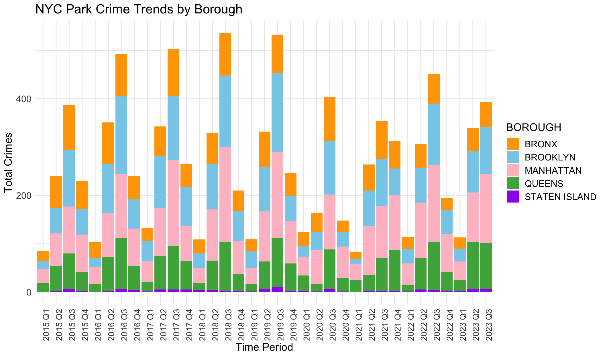
This stacked bar chart shows trends of total crimes in 5 different NYC boroughs, covering a period from 2015 Q1 (First Quarter of 2015) to 2023 Q3 (Third Quarter of 2023).
Generally, MANHATTAN and BROOKLYN have the most total crimes. This may result from their large populations and high densities of population. In contrast, STATEN ISLAND has the least total crimes for similar potential reasons. This may be also related to population characteristics of residence (income, races, community construction…). QUEENS generally has fewer crimes than MANHATTAN and BROOKLYN but more than the BRONX and STATEN ISLAND.
We also note that park crimes happen more in Q3 (the third quarter) each year. This periods are possibly warmer months when parks are more frequented.
There are increasing trends from 2015 to 2019. There is a noticeable drop in the total number of park crimes across all boroughs starting from 2020 Q1, which could be attributed to the COVID-19 pandemic and subsequent lockdowns or restrictions on park access.
Heatmap based on quarters and boroughs shows directly the seasonal patterns and densities of crimes.
ggplot(crime_stats, aes(x = Time_Period, y = BOROUGH, fill = Total_Crimes)) +
geom_tile() +
scale_fill_gradient(low = "lightblue", high = "red") +
theme_minimal() +
labs(title = "NYC Park Crime Heatmap by Borough and Year",
x = "Year",
y = "Borough",
fill = "Total Crimes") +
theme(axis.text.x = element_text(angle = 90, size = 9.5),
axis.text.y = element_text(size = 12),
title = element_text(size = 13),
legend.text = element_text(size = 12))
The provided plot is a heatmap that represents the total crimes reported in parks within the five boroughs of New York City over several years, from 2015 to 2023, by quarter. The color intensity represents the number of crimes, with darker red indicating a higher number of crimes and lighter blue colors indicating fewer crimes.
There appears to be a recurring pattern within each year, suggesting a seasonal trend in crime numbers. For instance, the third quarters consistently show higher crime rates across multiple years. This may result from the weather and temperature. It seems crimes seldom take place in winter, but more in summer and autumn.
Some years stand out with overall higher crime rates across all boroughs, including 2017, 2018, 2019 and 2022. This could be indicative of broader societal factors affecting crime rates, such as economic downturns or changes in policing policy.
There appears to be a lightening of the color (reduction in crimes) in 2020, which is possibly related to the COVID-19 pandemic when there may have been less activity in parks due to lockdowns and social distancing measures.
The intensity of colors varies across boroughs, indicating that some areas consistently experience higher crime rates than others. For example, MANHATTAN and BROOKLYN show more intense colors compared to STATEN ISLAND. Although STATEN ISLAND reports few crimes, we can still see light strips in the heatmap which indicate seasonal trends of crimes. This is hard to capture in the previous bar chart.
To see the trends more clearly for boroughs, we draw separate bar charts with LOESS smoothing lines to illustrate the trends.
# Function: Converts a string in the format "2019 Q1" to a date
convert_to_date <- function(time_period) {
parts <- strsplit(time_period, " ")[[1]]
year <- parts[1]
quarter <- substr(parts[2], 2, 2)
month <- match(quarter, c("1", "2", "3", "4")) * 3 - 2
paste(year, sprintf("%02d", month), "01", sep = "-")
#as.Date(paste(year, sprintf("%02d", month), "01", sep = "-"))
}
crime_stats$Time_Period <- sapply(crime_stats$Time_Period, convert_to_date)
crime_stats$Time_Period <- as.Date(crime_stats$Time_Period)# Plot the time series for each borough and add a LOESS smoothing line
boroughs <- unique(crime_stats$BOROUGH)
for (borough in boroughs) {
borough_data <- filter(crime_stats, BOROUGH == borough)
p <- ggplot(borough_data, aes(x = Time_Period, y = Total_Crimes)) +
geom_bar(stat = "identity", position = position_dodge(), aes(fill = BOROUGH)) +
geom_smooth(method = "loess", se = FALSE, linetype = 'solid', size = 1, color = "black") +
scale_fill_manual(values = custom_colors) +
theme_minimal() +
labs(title = paste("NYC Park Crime Trends in", borough),
x = "Time Period",
y = "Total Crimes") +
theme(axis.text.x = element_text(angle = 90, size = 12),
axis.text.y = element_text(size = 13),
title = element_text(size = 14),
legend.text = element_text(size = 13))
print(p)
}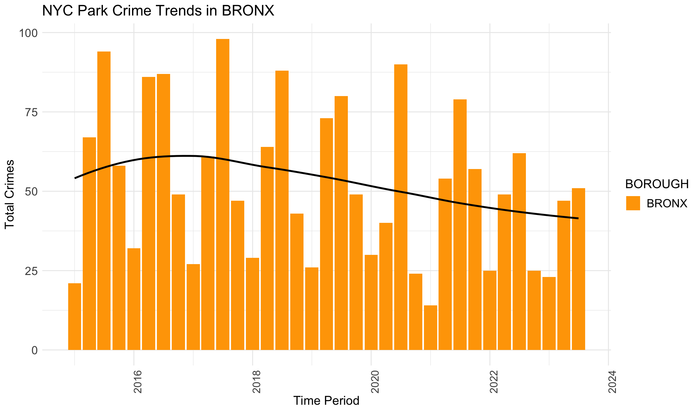


Black lines in the provided plots are LOESS smoothing lines, illustrating the underlying structure (trend) of the crimes data.
The general trends for BROOKLYN, MANHATTAN, QUEENS and STATEN ISLAND are similar. They all show an increasing trend from 2015 to 2019, and then crime numbers dropped during the pandemic. In the end, crime data again increase, with a tendency to surpass the previous crime records. However, it’s different for BRONX. The crimes start decreasing before the pandemic, and then decline gradually and slowly. This trend in BRONX is clear in this plot, but not apparent in the previous section.
Here we look into crime details for different boroughs, verifying if there are distinct patterns of crime specific to each borough. By examining the categories of crimes, we aim to uncover whether certain types of crimes are more prevalent in one borough over another, providing insight into the unique safety challenges each borough may face.
long_data <- all_data %>%
pivot_longer(
cols = c("MURDER", "RAPE", "ROBBERY", "FELONY_ASSAULT", "BURGLARY", "GRAND_LARCENY", "GRAND_LARCENY_MV"),
names_to = "CRIME_TYPE",
values_to = "CRIME_COUNT"
)
crime_type_stats <- long_data %>%
filter(!is.na(BOROUGH)) %>%
group_by(Time_Period, BOROUGH, CRIME_TYPE) %>%
summarize(Total_Crimes = sum(as.numeric(CRIME_COUNT), na.rm = TRUE))
# Generate a line chart for each borough
boroughs <- unique(crime_type_stats$BOROUGH)
for (borough in boroughs) {
borough_data <- filter(crime_type_stats, BOROUGH == borough)
p <- ggplot(borough_data, aes(x = Time_Period, y = Total_Crimes, color = CRIME_TYPE, group = CRIME_TYPE)) +
geom_line() +
theme_minimal() +
labs(title = paste("NYC Park Crime Trends in", borough), x = "Time Period", y = "Number of Crimes") +
theme(axis.text.x = element_text(angle = 90, size = 12),
legend.position = "bottom",
axis.text.y = element_text(size = 13),
title = element_text(size = 13),
legend.text = element_text(size = 12))
print(p)
}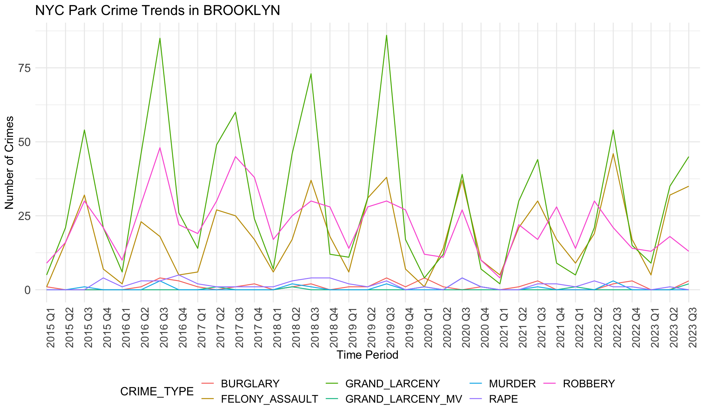

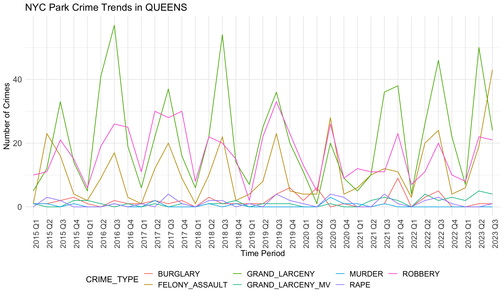
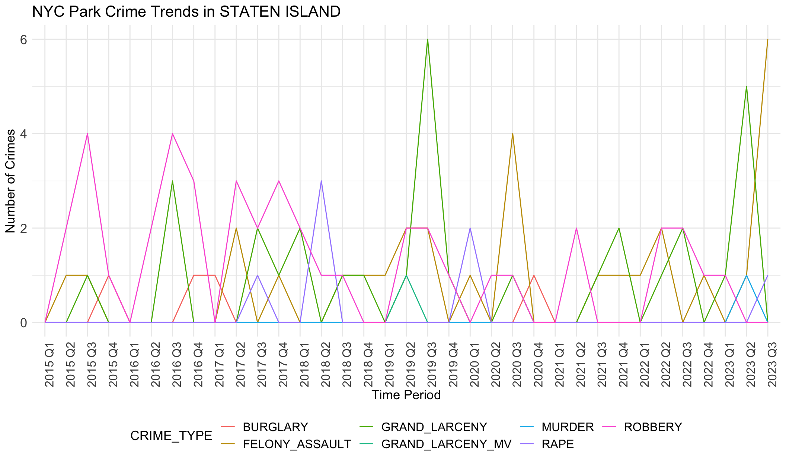
Generally, robbery, felony assault and grand larceny are three common crime categories in all boroughs. Crime numbers of these three types are much higher than other crime types. Other crimes like rape rarely happen, less than 5 per quarter.
Seasonal differences are evident here. Fluctuation show peaks in the third quarter and low ebbs in the first quarters.
We notice there are obvious differences in boroughs. In BRONX, robbery is always the most common crime except the year 2020. However, grand larceny is the most common crime in BROOKLYN, MANHATTAN and QUEENS. This may be related to population density, tourist activity and commercial activity in these areas. STATEN ISLAND does not show any trend or dominant crime types, different from other boroughs. This aligns with the small crime numbers in STATE ISLAND. It seems that STATEN ISLAND is relatively safer than other boroughs.
These observed crime patterns may be influenced by different socio-economic conditions across regions, such as poverty levels, unemployment rates, education levels, and community resources.
Larger parks may present more opportunities for criminal activities due to their expansive areas and diverse usage, while smaller parks could potentially have fewer incidents owing to their limited space and easier surveillance. To see whether there are relationship between park sizes and crime rates, we will explore the scatterplot to understand how park sizes correlate with the prevalence of crime within these boroughs.
all_data$TOTAL <- as.numeric(all_data$TOTAL)
# Create a summary data frame
park_crime_stats <- all_data %>%
filter(!is.na(BOROUGH)) %>%
group_by(PARK, BOROUGH) %>%
summarize(
Total_Crimes = sum(TOTAL, na.rm = TRUE),
Park_Size = mean(as.numeric(SIZE_ACRES), na.rm = TRUE)
) %>%
ungroup() # Create the scatterplot
ggplot(park_crime_stats, aes(x = Park_Size, y = Total_Crimes, color = BOROUGH)) +
geom_point() +
#scale_x_log10() + # Logarithmic scale for park size
theme_minimal() +
labs(
title = "Relationship between Park Size and Crimes",
x = "Park Size (Acres, log scale)",
y = "Total Crimes",
color = "Borough"
) +
theme(axis.text.x = element_text(angle = 90, size = 12),
legend.position = "bottom",
axis.text.y = element_text(size = 12),
title = element_text(size = 13),
legend.text = element_text(size = 12))
Outliers make this plot unclear. The majority of data points stack together. We will remove the outliers.
# Coomputer IQR
iqr_stats <- park_crime_stats %>%
summarize(
Q1 = quantile(Total_Crimes, 0.25, na.rm = TRUE),
Q3 = quantile(Total_Crimes, 0.75, na.rm = TRUE)
) %>%
mutate(IQR = Q3 - Q1)
# Define ranges for outliers
lower_bound <- iqr_stats$Q1 - 1.5 * iqr_stats$IQR
upper_bound <- iqr_stats$Q3 + 1.5 * iqr_stats$IQR
# Filter out outliers
park_crime_stats_filtered <- park_crime_stats %>%
filter(Total_Crimes >= lower_bound & Total_Crimes <= upper_bound)
# Create the scatterplot again
ggplot(park_crime_stats_filtered, aes(x = Park_Size, y = Total_Crimes, color = BOROUGH)) +
geom_point() +
theme_minimal() +
labs(
title = "Relationship between Park Size and Crime (Outliers Removed)",
x = "Park Size (Acres)",
y = "Total Crimes",
color = "Borough"
) +
theme(axis.text.x = element_text(angle = 90, size = 12),
legend.position = "bottom",
axis.text.y = element_text(size = 12),
title = element_text(size = 13),
legend.text = element_text(size = 12))
There’s a dense cluster of points near the origin, indicating that smaller parks tend to have lower counts of total crimes. This could suggest that park size is a factor in crime occurrence, with smaller parks offering fewer opportunities for crime. However, there is no distinct upward trend line that would indicate a clear positive correlation between park size and crime rates.
Crime data have different distributions based on boroughs. It’s noticeable that certain boroughs like MANHATTAN and BROOKLYN have points that lie closly on the y-axis (total crimes), indicating these boroughs have higher crime rates. STATEN ISLAND tends to have much lower crime rates no matter what the park size is. This also verifies STATEN ISLAND is safter than other boroughs.
It is commonly assumed that higher unemployment leads to higher crime rates. There are some reasons. For example, unemployment can lead to financial hardship, increasing the likelihood of engaging in criminal activities as a means of survival or income generation. With more people unemployed, there is a higher likelihood that some individuals will turn to crime, given the increased opportunities and time available.
However, there exist other relationships. For example, the level of unemployment is expected to be negatively associated with fluctuations in crime rates. It might suggest that the factors leading to changes in unemployment rates (such as economic conditions, policy changes, or labor market dynamics) could also be influencing crime rates in the opposite direction. In a booming economy, unemployment might decrease, but the increased activity and wealth might lead to more opportunities for certain types of crime (like theft or fraud). It could also imply that the relationship between unemployment and crime is not straightforward or direct and might be influenced by other mediating factors.
We will investigate the link between unemployment and NYC park crimes here. We first illustrate the unemployment rate alongside the timeline and draw a LOESS smoothing line to see the trend.
unemployment_rate <- read_excel("~/Desktop/unemployment_rate.xlsx") # Read data
unemployment_rate$Avg <- rowMeans(unemployment_rate[, 2:13], na.rm = TRUE) # Calculate average
unemployment_rate <- na.omit(unemployment_rate, cols = c("Nov", "Dec")) # Remove missing values
unemployment_long <- unemployment_rate %>%
pivot_longer(cols = Jan:Dec, names_to = "Month", values_to = "UnemploymentRate") %>%
mutate(Month = match(Month, month.abb))
# Plotting
ggplot(unemployment_long, aes(x = Year + (Month-1)/12, y = UnemploymentRate)) +
geom_line() +
geom_smooth() + # Added missing +
scale_x_continuous(breaks = unique(unemployment_long$Year)) +
labs(title = "Monthly Unemployment Rate Over Years",
x = "Year",
y = "Unemployment Rate (%)") +
theme_minimal()
It is obvious that the unemployment rate decreases from 2013 to 2018, increases from 2018 to 2021 (pandemic), and decreases from 2021. In general, the unemployment rate and the number of total park crimes have the opposite trend.
It’s worth noting that unemployment rate does not show seasonal differences, while park crimes happen more in summer and autumn and less in winter. This may be caused by the characteristics of parks as they require spending time outside, which is weather dependent.
We further look at the two most possible and common crime types (robbery and grand larceny) that may be related to the negative association with unemployment rates.
long_data_sub <- all_data %>%
pivot_longer(
cols = c("ROBBERY", "GRAND_LARCENY"),
names_to = "CRIME_TYPE",
values_to = "CRIME_COUNT"
)
crime_sub_stats <- long_data_sub %>%
filter(!is.na(BOROUGH)) %>%
group_by(Time_Period, BOROUGH, CRIME_TYPE) %>%
summarize(Total_Crimes = sum(as.numeric(CRIME_COUNT), na.rm = TRUE))
# Generate a line chart for each borough
boroughs <- unique(crime_sub_stats$BOROUGH)
for (borough in boroughs) {
borough_data <- filter(crime_sub_stats, BOROUGH == borough)
p <- ggplot(borough_data, aes(x = Time_Period, y = Total_Crimes, color = CRIME_TYPE, group = CRIME_TYPE)) +
geom_line() +
geom_smooth()+
theme_minimal() +
labs(title = paste("NYC Park Crime Trends in", borough), x = "Time Period", y = "Number of Crimes") +
theme(axis.text.x = element_text(angle = 90, size = 12),
legend.position = "bottom",
axis.text.y = element_text(size = 13),
title = element_text(size = 13),
legend.text = element_text(size = 12))
print(p)
}
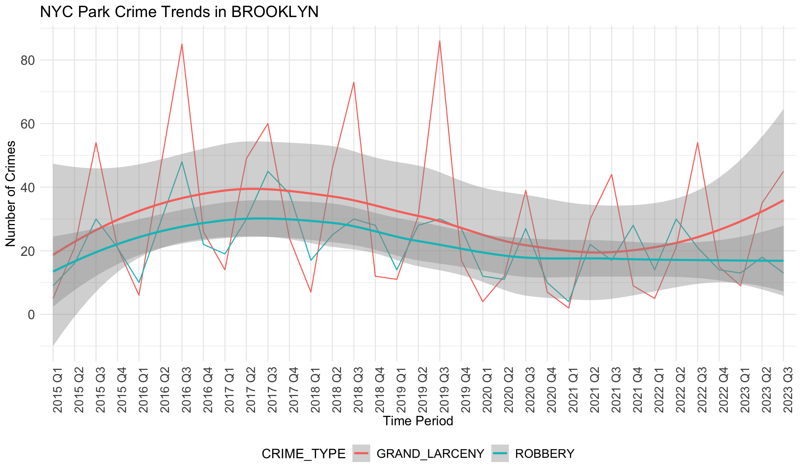

If data was correlated with unemployement rates, we would expect the rate of each type of crime to follow a similar trajectory to unemployment: decreases from 2013 to 2018, increases from 2019 to 2021 (pandemic), and decreases from 2021. However, the data above shows the opposite of this trend. The general trend in crime rates across boroughs is that it increases slowly from 2015-2018, declines slowly from 2018-2022, and then begins to increase until the most recent quarter. This negative relationship with unemployment rate indicates that there is less crime when unemployment rates are higher, though there are likely other factors at play here that we have not accounted for.
We note grand larceny in STATEN ISLAND does not follow this general trend as it increases from 2015-2019, decreases from 2019-2021, and then increases from 2021-2023. However, we note that data is sparse for STATEN ISLAND as the range for total number of grand larceny crimes documented is between 0-2 during the entire time period. We also note that trend lines for robbery in MANHATTAN do not follow this pattern as it stays largely flat throughout the time period analyzed.
We can do a closer analysis of park visits data during the pandemic period using Google Mobility data. This analysis will be completed from February 2020 until February 2022.
#import Google Data and clean
data = read.csv('https://raw.githubusercontent.com/ActiveConclusion/COVID19_mobility/master/google_reports/mobility_report_US.csv')
# Step 2: Filter for New York Data and Parks
nyc_data <- data %>%
filter(state == "New York") %>%
select(county, date, parks)
selected_regions <- nyc_data %>%
filter(county %in% c("Bronx County", "Kings County", "Queens County",
"New York County", "Richmond County"))
# Replace borough names
selected_regions <- selected_regions %>%
mutate(county = case_when(
county == "Bronx County" ~ "BRONX",
county == "Kings County" ~ "BROOKLYN",
county == "Queens County" ~ "QUEENS",
county == "New York County" ~ "MANHATTAN",
county == "Richmond County" ~ "STATEN ISLAND",
TRUE ~ county
))
selected_regions$date = as.Date(selected_regions$date)#Plotting of graph
ggplot(selected_regions, aes(x = date, y = parks, color = county)) +
geom_line() +
theme_minimal() +
labs(title = "Change in Park Visits From Baseline", x = "Date", y = "Change From Baseline") +
theme(axis.text.x = element_text(angle = 90, size = 12),
legend.position = "bottom",
axis.text.y = element_text(size = 12),
title = element_text(size = 13),
legend.text = element_text(size = 12))In the graph above, we can see lots of fluctuations, which may be because park visitation increases on the weekends. To view a more consistent set of data, we can create a 7-day moving average so that the fluctuations are absorbed into the average of 7 days. For example, the value for park visits on February 7th will be average of the values from February 1-7.
library(zoo)
selected_regions2 = transform(selected_regions, avg7 = rollmeanr(parks, 7, fill = NA))
ggplot(selected_regions2, aes(x = date, y = avg7, color = county)) +
geom_line() +
theme_minimal() +
labs(title = "Change in Park Visits From Baseline", x = "Date", y = "Change From Baseline") +
theme(axis.text.x = element_text(angle = 90, size = 12),
legend.position = "bottom",
axis.text.y = element_text(size = 12),
title = element_text(size = 13),
legend.text = element_text(size = 12))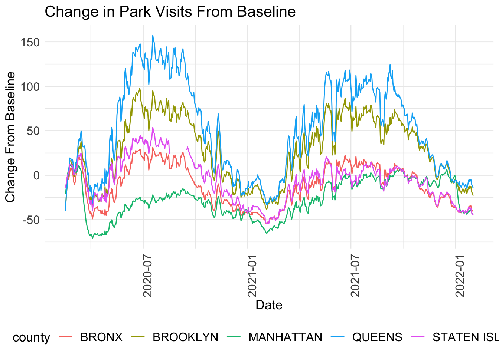
The first date of data is now Febuary 21 2020 instead of February 15 2020 since we are calculating a 7 day average. This means that our values no longer start at the indexed value = 0, which represents February 15 2020. In the graph above, we see that all counties generally follow the same trajectory: park visits increased steadily through the summer of 2020, and then decreased beginning in October 2020 through winter before picking back up in March 2021 for the summer and decreasing one last time starting in around September 2021 through February 2022. This aligns with more pleasant weather patterns to be outside.
#closer analysis of each county
ggplot(selected_regions2, aes(x = date, y = avg7, color = county)) +
geom_line() +
theme_minimal() +
facet_grid(~county) +
labs(title = "Change in Park Visits From Baseline", x = "Date", y = "Change From Baseline") +
theme(axis.text.x = element_text(angle = 90, size = 12),
legend.position = "bottom",
axis.text.y = element_text(size = 12),
title = element_text(size = 13),
legend.text = element_text(size = 12))From the graphs above, we can see that Queens saw the greatest increase in park visits compared to the other boroughs. At its peak around July 2020, park visits were more than 150% higher than the pre-pandemic levels in January 2020. Park visits in Queens peaked again during the following summer around July 2021 at ~120% higher than pre-pandemic levels. On the contrary, Manhattan saw the smallest increase in park visits (at its peak in February 2020, it was ~12.5% higher than pre=pandemic) and it also represents the borough with the lowest overall decline in park visits (at it’s trough in March 2020, it was ~70% below pre-pandemic levels). The Bronx and Staten Island had similar park frequency estimates, with peaks around 25-50% higher than pre-pandemic and lows around 50% below pre-pandemic, around the same times.
Given these trends, we can use the NYC crimes data to see if this correlated with the number of parks in each borough - if correlated, we would expect to see that boroughs with more parks utilized them more frequently during the pandemic period. It would follow that Queens should have the most number of parks and Manhattan should have the fewest.
number_of_parks <- all_data %>%
select(PARK, BOROUGH) %>%
distinct() %>%
group_by(BOROUGH) %>%
tally(n = "parks")
#to order from high to low
number_of_parks <- number_of_parks %>% arrange(-parks)
number_of_parks$BOROUGH <- as.vector(number_of_parks$BOROUGH)
number_of_parks$BOROUGH = factor(number_of_parks$BOROUGH,number_of_parks$BOROUGH)
ggplot(na.omit(number_of_parks), aes(x = BOROUGH, y = parks, fill = BOROUGH)) +
geom_col() +
theme_classic() +
labs(title = "Number of Parks by Borough", x = "Borough", y = "Number of Parks") +
theme(axis.text.x = element_text(angle = 90))Based on the graph above, we can see that Brooklyn clearly has the most number of parks and Staten Island has the fewest, which means that there likely is no correlation between the visits to parks and the number of parks in the borough. However, since the visits are relative to pre-pandemic levels, it could also be the case that Brooklyn parks were heavily visited in the pre-pandemic periods such that there was not too much of an increase during the pandemic. Based on the number of parks above, we can also infer that the Bronx and Staten Island had similar increases and decreases in park visits even though Staten Island has far fewer parks than the Bronx, which means that parks in Staten Island were being more utilized and yet had fewer crimes.
Finally, we can compare our time series of park visit data to see if it correlated with crimes data. We can create trend lines in our Mobility data to see if they match crime rates.
#data with trend lines for Mobility Data
boroughs <- unique(selected_regions2$county)
for (borough in boroughs) {
borough_data <- filter(selected_regions2, county == borough)
p <- ggplot(borough_data, aes(x = date, y = avg7)) +
geom_line() +
geom_smooth()+
theme_minimal() +
labs(title = paste("Indexed Park Mobility Data In", borough), x = "Date", y = "Mobility Relative to Pre-Pandemic") +
theme(axis.text.x = element_text(angle = 90, size = 12),
legend.position = "bottom",
axis.text.y = element_text(size = 13),
title = element_text(size = 13),
legend.text = element_text(size = 12))
print(p)
}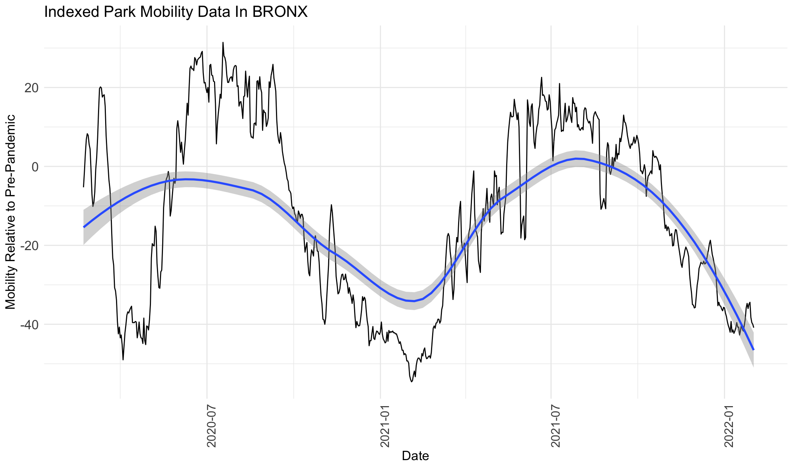
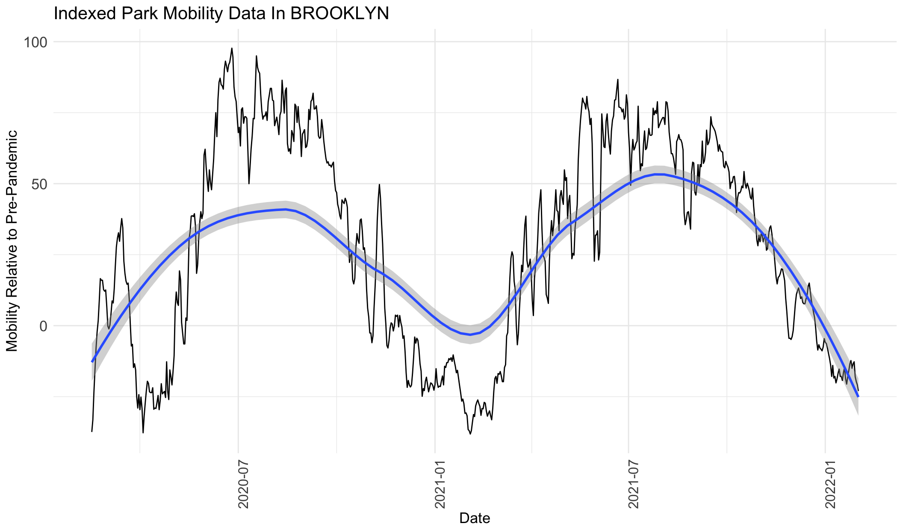
From the graphs above for park visits, we can see that visits increase from around February 2020 to August 2020, decrease from July 2020 to February 2021, increase from February 2021 to around July 2021, and then decrease again to February 2022. The only exception is Manhattan, which shows a mild decline from February 2020 to February 2021, and then follows the same trend as the rest of the boroughs.
If this data is correlated with park crime data, we can expect to see similar trends in increases and decreases in crimes.
# Filter data and generate a line chart for each borough
boroughs <- unique(crime_type_stats$BOROUGH)
crimes_subset = crime_stats %>%
filter(Time_Period > '2020-02-01' & Time_Period < '2022-02-01')
for (borough in boroughs) {
borough_data <- filter(crimes_subset, BOROUGH == borough)
p <- ggplot(borough_data, aes(x = Time_Period, y = Total_Crimes)) +
geom_line() +
geom_smooth()+
theme_minimal() +
labs(title = paste("Pandemic Period NYC Park Crime Trends in", borough), x = "Time Period", y = "Number of Crimes") +
theme(axis.text.x = element_text(angle = 90, size = 12),
legend.position = "bottom",
axis.text.y = element_text(size = 13),
title = element_text(size = 13),
legend.text = element_text(size = 12))
print(p)
}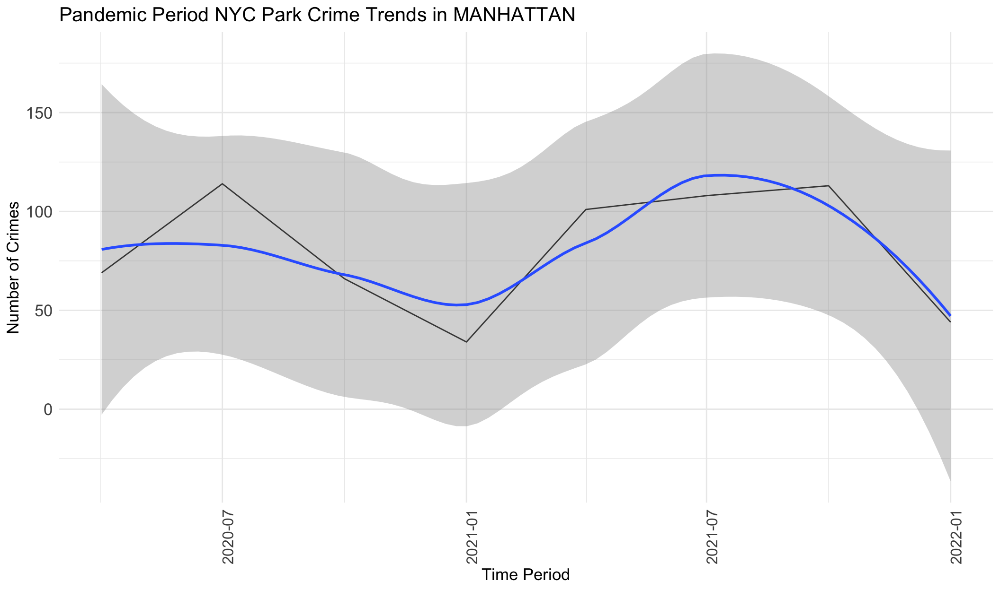
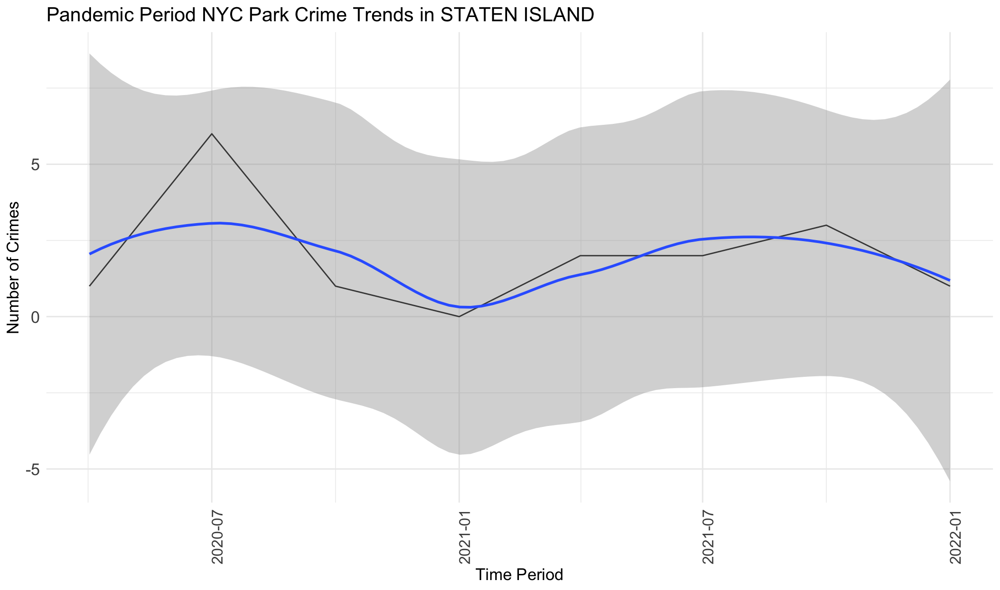
From the graphs above, we can see that crimes generally increase from April 2020 to July 2020, followed by a decrease from July 2020 to January 2021, followed by an increase from January 2021 to October 2021, and then a decrease from July 2021 to January 2022. Very generally, this follows the same pattern as mobility data, with variations only in a few months. This indicates that during the pandemic period, park visits were correlated in trends with crime frequency at parks. However, we note that this also correlated with warmer weather and potentially numerous other factors.